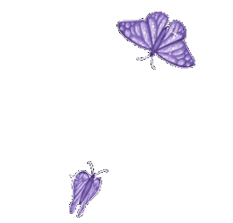
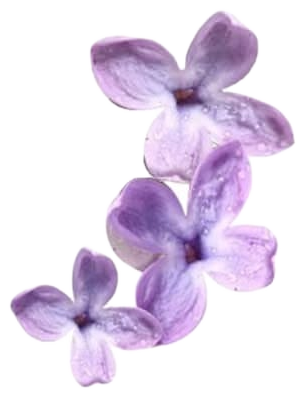
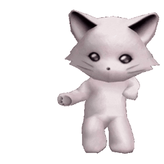
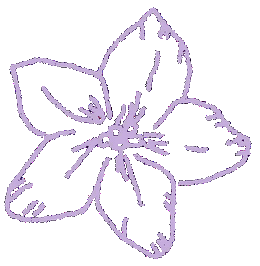
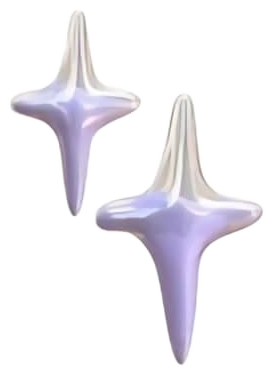
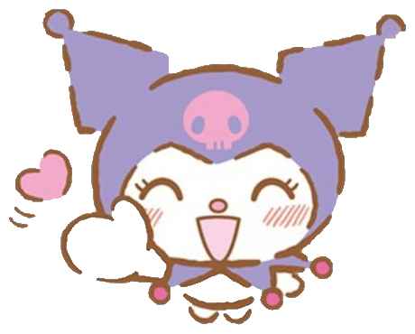

Word document
Lesson Plan Model for TBLT class implementation
Objectives, procedures, materials, differentiation and assessment for the 50-minute lesson.
Download the lesson planModel Class
A 50-minute speaking lesson for B1 students at Universidad de Nariño.



Where It All Came Together
Planning this 50-minute Task-Based Language Teaching (TBLT) lesson with my classmates (María Alejandra Acosta, Ángela Caicedo, and William Timaná) for B1 students in our program at Universidad de Nariño was where everything we learned during the semester really came together. Instead of designing a regular speaking class focused only on Simple Past grammar, we wanted to deal with something very common in university classrooms: students feeling anxious, over-rehearsing, and avoiding participation because they are scared of making mistakes.
To help learners feel safe talking about a personal memory with a meaningful object or photo, we integrated affective strategies and Zimmerman’s self-regulation phases across the entire lesson. Simple steps like starting with a nervous thermometer and breathing exercises, limiting notes to five keywords so students would not read a script, and normalizing errors through the “oops-and-go” rule were meant to lower the pressure of speaking. Combining rotating trio roles, a mid-task self-monitoring pause, and a final Padlet reflection helped turn self-regulation into something practical that students could actually use during the activity.
Working on this lesson plan changed how I look at teaching speaking. As a future teacher, I saw that telling students not to be nervous does not work unless we give them concrete tools to manage their anxiety and show them that mistakes are normal. For me, the most valuable part of this experience was realizing how a supportive, well-structured class can help students stop worrying about perfection and focus on sharing their stories.
The Lesson
Zimmerman: Forethought (opening)
Zimmerman: Forethought (goal setting)
Zimmerman: Performance
Zimmerman: Self-reflection

The Whole Plan
Below you can find the complete lesson plan designed for this class and the slides.
Word document
Objectives, procedures, materials, differentiation and assessment for the 50-minute lesson.
Download the lesson plan
Sources
Throughout this semester in LLS and Self-Reflection, the following academic sources guided my reflections, class activities, and lesson planning:
Harmer, J. (2015). The practice of English language teaching (5th ed.). Pearson.
Oxford, R. L. (1990). Language learning strategies: What every teacher should know. Heinle & Heinle.
Oxford, R. L. (2017). Teaching and researching language learning strategies: Self-regulation in context (2nd ed.). Routledge.
Purgason, K. B. (2014). Lesson planning in second/foreign language teaching. In M. Celce-Murcia, D. M. Brinton, & M. A. Snow (Eds.), Teaching English as a second or foreign language (4th ed., pp. 362–375). Heinle Cengage Learning.
Zimmerman, B. J. (2002). Becoming a self-regulated learner: An overview. Theory Into Practice, 41(2), 64–70.

The Last Stop
This was the last page of Alexandra’s academic portfolio. See you next time!